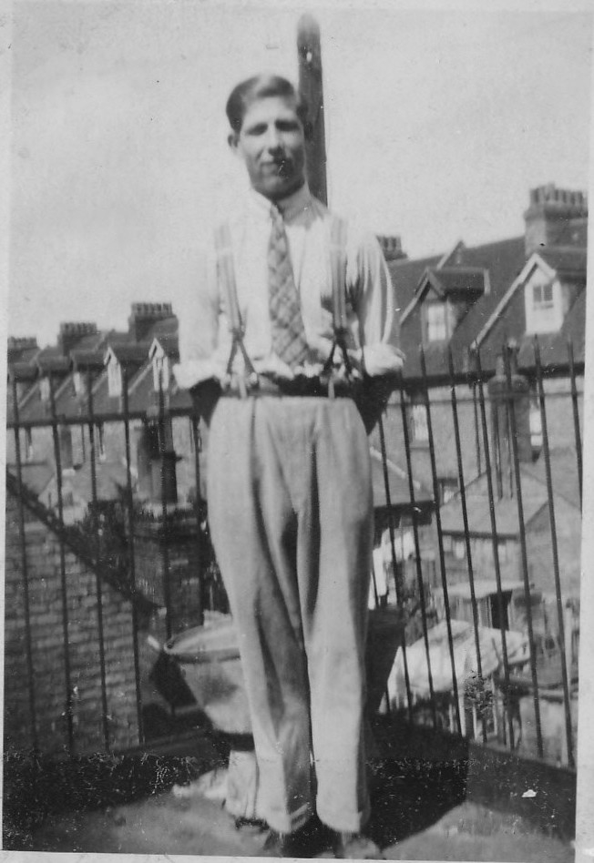
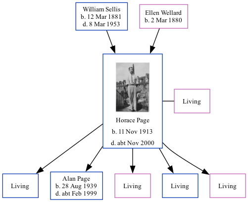

Horace Stanley Wallis Page 1913 - c2000
[ Home ] | [ Calendar ] | [ Surnames Index ] | [ Family History ]A transport worker haulage and the son of William Sellis (a general laborer) and Ellen WellardHorace Page, the fourth cousin on the father's side of Nigel Horne, was born in Elham, Kent, England on Nov 11, 19131,2 and married Edith Alexander (with whom he had 5 children: Norman J, Alan Stanley, Gwendolyn E, John H and Janice M, along with 4 surviving children) in Elham around Aug 19383. On Sep 29, 1939, he lived at 30a Oaks Road, Folkestone, Kent, England1.
He died c. Nov 2000 in Ashford, Kent, England2.
Parents
- William Ernest was born on Mar 12, 1881
- Ellen Fanny Maria was born on Mar 2, 1880
Children
- Alan Stanley was born on Aug 28, 1939
Citations
- 1939 Register - Findmypast (was the head of the household)
- England & Wales deaths 1837-2007 - Findmypast
- England & Wales Marriages 1837-2005 - Findmypast
Media
Horace Page

England & Wales deaths 1837-2007 - BMD/D/2000/12/83872563
England & Wales births 1837-2006 - BMD/B/1914/1/AZ/001146/058
England & Wales marriages 1837-2005 - BMD/M/1938/3/AZ/001232/135
1939 Register - TNA/R39/1724/1724I/007/14
Family Tree
Generated by ged2site. Last updated on Nov 13, 2024